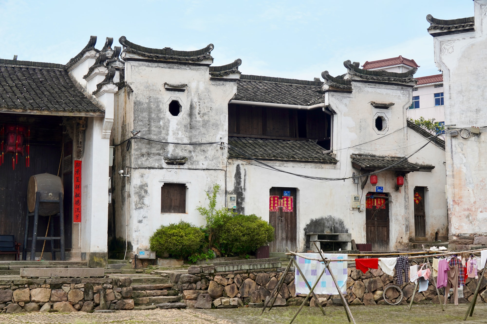

省保传统民居
村道旁的一面老宅叶志华民居
叶志华民居是省级文物保护单位“新叶村乡土建筑”的组成部分。建筑面向村道而立，是步行经过时容易与道路一同感受到的老宅界面。
01
面向村道的外部轮廓
站在道路一侧，建筑正面构成清楚的外部界面。住宅贴近村道，也自然融入古村连续的街巷景观。

叶志华民居是省级文物保护单位“新叶村乡土建筑”的组成部分。建筑面向村道而立，是步行经过时容易与道路一同感受到的老宅界面。
站在道路一侧，建筑正面构成清楚的外部界面。住宅贴近村道，也自然融入古村连续的街巷景观。